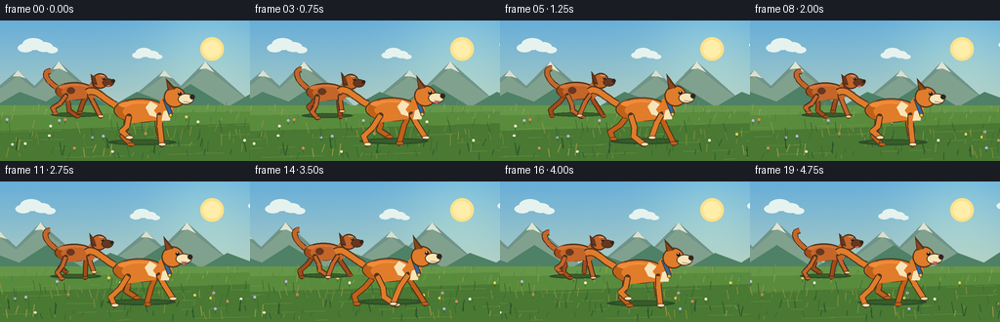
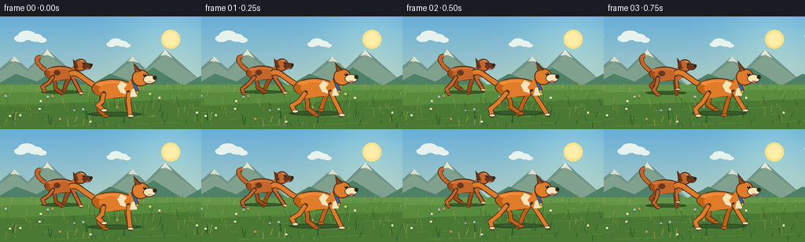

CODING AGENTS AS PIXEL WORLD MODELS
traex/GPT-5.6-Sol · instance_preservation_0001
点击播放 · 原生 RGB 像素
逐轮保存的候选
回放视频、检查图与代码变化。
每份候选均可单独播放。实际图片检查记录在下方工具轨迹中。
候选 01播放与检查图
点击播放 · 原生 RGB 像素


展开代码变化
--- 上一保存版本
+++ 本次保存版本
@@ -0,0 +1,232 @@
+from pathlib import Path
+import math
+import json
+import numpy as np
+from PIL import Image, ImageDraw, ImageFilter
+import artifact_io
+
+CASE_DIR = Path(__file__).resolve().parent
+SPEC = json.loads((CASE_DIR / 'task_spec.json').read_text())
+W, H, N = SPEC['width'], SPEC['height'], SPEC['frames']
+S = 3
+rng = np.random.default_rng(87241)
+
+# Persistent world details. They slide left while the dogs remain tracked by camera.
+far_grass = [(float(rng.uniform(-30, 430)), float(rng.uniform(88, 105)),
+ float(rng.uniform(2, 7)), tuple(rng.choice([
+ (74,123,68),(86,139,74),(112,151,76),(149,166,82)], 1)[0]))
+ for _ in range(125)]
+near_grass = [(float(rng.uniform(-30, 560)), float(rng.uniform(109, 143)),
+ float(rng.uniform(3, 12)), float(rng.uniform(-3,3)),
+ tuple(rng.choice([(48,92,47),(60,108,48),(86,122,50),(122,139,57),(154,151,67)], 1)[0]))
+ for _ in range(190)]
+flowers = [(float(rng.uniform(-20, 560)), float(rng.uniform(103, 139)),
+ tuple(rng.choice([(244,210,80),(247,239,208),(220,139,93),(191,180,231)], 1)[0]))
+ for _ in range(32)]
+
+
+def sc(v): return int(round(v*S))
+def pts(seq): return [(sc(x),sc(y)) for x,y in seq]
+def ellipse(d, box, fill, outline=None, width=1):
+ d.ellipse(tuple(sc(x) for x in box), fill=fill, outline=outline, width=max(1,sc(width)))
+def line(d, seq, fill, width, joint='curve'):
+ d.line(pts(seq), fill=fill, width=max(1,sc(width)), joint=joint)
+def polygon(d, seq, fill): d.polygon(pts(seq), fill=fill)
+
+def bezier(p0,p1,p2,p3,n=20):
+ out=[]
+ for t in np.linspace(0,1,n):
+ q=1-t
+ out.append((q**3*p0[0]+3*q*q*t*p1[0]+3*q*t*t*p2[0]+t**3*p3[0],
+ q**3*p0[1]+3*q*q*t*p1[1]+3*q*t*t*p2[1]+t**3*p3[1]))
+ return out
+
+def background(frame):
+ # Warm blue gradient with subtle fixed film grain.
+ y = np.linspace(0,1,H*S)[:,None,None]
+ top=np.array([103,174,217],dtype=float); bottom=np.array([219,225,181],dtype=float)
+ arr=np.broadcast_to(top*(1-y)+bottom*y,(H*S,W*S,3)).copy()
+ yy,xx=np.mgrid[0:H*S,0:W*S]
+ glow=np.exp(-((xx-sc(214))**2+(yy-sc(28))**2)/(2*(sc(42)**2)))[:,:,None]
+ arr += glow*np.array([24,19,5])[None,None,:]
+ noise=np.random.default_rng(100+frame).normal(0,0.8,arr.shape[:2])[:,:,None]
+ arr=np.clip(arr+noise,0,255).astype(np.uint8)
+ im=Image.fromarray(arr,'RGB'); d=ImageDraw.Draw(im)
+ # Sun and gauzy clouds.
+ ellipse(d,(205,17,229,41),(255,226,139))
+ ellipse(d,(208,20,226,38),(255,238,170))
+ cloud_shift=-frame*0.20
+ for cx,cy,sz in [(39,26,1.0),(151,34,.75),(275,23,.9)]:
+ x=cx+cloud_shift
+ for ox,oy,r in [(-13,2,8),(-5,-2,11),(6,1,9),(14,4,6)]:
+ ellipse(d,(x+(ox-r)*sz,cy+(oy-r*.55)*sz,x+(ox+r)*sz,cy+(oy+r*.55)*sz),(230,242,238))
+ # Distant mountain silhouettes, scrolling very slowly.
+ shift=-(frame*1.7)%150
+ for rep in (-150,0,150,300):
+ x=rep+shift
+ polygon(d,[(x-25,87),(x+18,51),(x+35,67),(x+60,42),(x+112,88)],(112,147,136))
+ polygon(d,[(x-25,88),(x+18,57),(x+35,70),(x+60,48),(x+112,88)],(129,161,143))
+ polygon(d,[(x+13,57),(x+18,51),(x+26,59),(x+19,57)],(217,223,204))
+ polygon(d,[(x+54,50),(x+60,42),(x+69,53),(x+61,49)],(223,228,211))
+ # Layered foothills.
+ off=-(frame*2.5)%120
+ for rep in (-120,0,120,240,360):
+ x=rep+off
+ polygon(d,[(x-20,96),(x+20,73),(x+47,83),(x+75,65),(x+125,96)],(78,129,102))
+ polygon(d,[(0,87),(256,87),(256,144),(0,144)],(102,151,72))
+ # Meadow depth bands.
+ polygon(d,[(0,97),(256,93),(256,144),(0,144)],(89,139,60))
+ polygon(d,[(0,113),(256,105),(256,144),(0,144)],(73,121,51))
+ # Distant blades.
+ shift2=frame*4.6
+ for wx,base,h,c in far_grass:
+ x=((wx-shift2+30)%460)-30
+ if x < 260:
+ line(d,[(x,base),(x+.9,base-h)],c,.65)
+ # Ground speed streaks aid the reading of running.
+ for k in range(25):
+ y0=106+(k*17%37)
+ x0=((k*53-frame*18)%330)-40
+ length=9+(k*11%28)
+ line(d,[(x0,y0),(x0+length,y0-.8)],(117,153,66),.55)
+ # Flowers and foreground grass.
+ shift3=frame*7.2
+ for wx,base,c in flowers:
+ x=((wx-shift3+20)%580)-20
+ if x<260:
+ line(d,[(x,base),(x,base-4)],(49,100,43),.65)
+ ellipse(d,(x-1.3,base-5.6,x+1.3,base-3.0),c)
+ for wx,base,h,lean,c in near_grass:
+ x=((wx-shift3+30)%620)-30
+ if x<262:
+ line(d,[(x,base),(x+lean,base-h)],c,.7 if base<128 else .9)
+ return im
+
+
+def joint_limb(d, points0, outer, inner, width, paw_point, s, paw_light=None):
+ # Rounded outlined leg assembled as a coherent articulated limb.
+ line(d,points0,outer,width+2.1)
+ for p in points0:
+ ellipse(d,(p[0]-(width+1)/2,p[1]-(width+1)/2,p[0]+(width+1)/2,p[1]+(width+1)/2),outer)
+ line(d,points0,inner,width)
+ for p in points0[1:-1]:
+ ellipse(d,(p[0]-width/2,p[1]-width/2,p[0]+width/2,p[1]+width/2),inner)
+ px,py=paw_point
+ ellipse(d,(px-3.5*s,py-1.8*s,px+4.5*s,py+2.1*s),outer)
+ ellipse(d,(px-2.8*s,py-1.15*s,px+3.8*s,py+1.3*s),paw_light or inner)
+
+
+def limb_points(anchor, phase, kind, s):
+ ax,ay=anchor
+ swing=math.sin(phase)
+ lift=max(0,-math.cos(phase))
+ if kind=='front':
+ knee=(ax+7.5*s*swing, ay+11*s-2.5*s*lift)
+ paw=(ax+17*s*swing+2*s, ay+29*s-8*s*lift)
+ else:
+ # Hocks point backward, making the rear legs anatomically distinct.
+ knee=(ax+8.0*s*swing-2*s, ay+12*s-2*s*lift)
+ hock=(ax+14*s*swing-7*s, ay+21*s-6*s*lift)
+ paw=(ax+19*s*swing, ay+29*s-8*s*lift)
+ return [anchor,knee,hock,paw],paw
+ return [anchor,knee,paw],paw
+
+
+def dog(d, cx, cy, s, phase, coat, dark, cream, collar, variant=0):
+ # Gallop compression/extension subtly changes the torso's pitch and height.
+ bob=-abs(math.sin(phase))*1.5*s
+ cx += math.sin(phase*.5)*.65*s; cy += bob
+ outline=(83,53,29) if variant==0 else (79,48,27)
+ far=(max(0,coat[0]-32),max(0,coat[1]-27),max(0,coat[2]-18))
+ # Soft moving cast shadow.
+ ellipse(d,(cx-35*s,cy+29*s,cx+34*s,cy+35*s),(43,79,39))
+ ellipse(d,(cx-26*s,cy+30*s,cx+27*s,cy+33.5*s),(57,91,42))
+ # Tail behind torso: dog 2 has the recognizably curled tail.
+ if variant==0:
+ tail=bezier((cx-27*s,cy-5*s),(cx-43*s,cy-14*s),(cx-48*s,cy-23*s),(cx-56*s,cy-18*s))
+ else:
+ wag=2*s*math.sin(phase+.7)
+ tail=bezier((cx-27*s,cy-5*s),(cx-42*s,cy-15*s),(cx-46*s,cy-29*s+wag),(cx-35*s,cy-29*s+wag))
+ line(d,tail,outline,8*s); line(d,tail,coat,5.7*s)
+ # Far-side legs first.
+ for anchor,ph,kind in [((cx+15*s,cy+5*s),phase+math.pi,'front'),
+ ((cx-16*s,cy+5*s),phase+.2,'hind')]:
+ lp,paw=limb_points(anchor,ph,kind,s)
+ joint_limb(d,lp,outline,far,4.2*s,paw,s)
+ # Torso and tucked abdomen.
+ ellipse(d,(cx-29*s,cy-12*s,cx+24*s,cy+12*s),coat,outline,1.2)
+ polygon(d,[(cx-25*s,cy+2*s),(cx-13*s,cy+13*s),(cx+13*s,cy+10*s),(cx+22*s,cy+1*s)],coat)
+ # Back/rump warmth and a top highlight following form.
+ ellipse(d,(cx-27*s,cy-9*s,cx-5*s,cy+9*s),far)
+ ellipse(d,(cx-24*s,cy-9*s,cx+15*s,cy-2*s),tuple(min(255,v+16) for v in coat))
+ # Re-cover center, retaining just edge shading/highlight.
+ ellipse(d,(cx-20*s,cy-7*s,cx+18*s,cy+9*s),coat)
+ # Identity markings on flank.
+ if variant==0:
+ # White lightning-shaped shoulder patch.
+ polygon(d,[(cx+8*s,cy-9*s),(cx+15*s,cy-5*s),(cx+11*s,cy),(cx+17*s,cy+8*s),(cx+7*s,cy+5*s),(cx+3*s,cy-3*s)],cream)
+ else:
+ # Dark oval flank patch.
+ ellipse(d,(cx-13*s,cy-5*s,cx-2*s,cy+4*s),dark)
+ # Near legs, strong readable opposing stride.
+ for anchor,ph,kind in [((cx-14*s,cy+6*s),phase+math.pi,'hind'),
+ ((cx+17*s,cy+5*s),phase,'front')]:
+ lp,paw=limb_points(anchor,ph,kind,s)
+ pawc=cream if (variant==0 or kind=='front') else coat
+ joint_limb(d,lp,outline,coat,4.6*s,paw,s,pawc)
+ # Chest ruff / neck connects head and body.
+ polygon(d,[(cx+17*s,cy-9*s),(cx+26*s,cy-19*s),(cx+31*s,cy+2*s),(cx+20*s,cy+12*s)],coat)
+ if variant==0:
+ polygon(d,[(cx+21*s,cy+1*s),(cx+29*s,cy-2*s),(cx+27*s,cy+10*s),(cx+19*s,cy+10*s)],cream)
+ # Neck collar remains a stable ID cue in every frame.
+ line(d,[(cx+22*s,cy-12*s),(cx+28*s,cy+4*s)],outline,4.6*s)
+ line(d,[(cx+22*s,cy-12*s),(cx+28*s,cy+4*s)],collar,2.8*s)
+ # Head, slightly thrust forward in extension.
+ thrust=1.3*s*max(0,math.cos(phase))
+ hx=cx+30*s+thrust; hy=cy-13*s
+ ellipse(d,(hx-10*s,hy-11*s,hx+12*s,hy+10*s),coat,outline,1.2)
+ # Ears bounce but preserve silhouette; variant 0 pointed, variant 1 floppy.
+ earbob=2*s*math.sin(phase+.9)
+ if variant==0:
+ polygon(d,[(hx-6*s,hy-7*s),(hx-8*s,hy-21*s+earbob),(hx+2*s,hy-9*s)],outline)
+ polygon(d,[(hx-4.8*s,hy-8*s),(hx-7*s,hy-17*s+earbob),(hx+.4*s,hy-8*s)],dark)
+ else:
+ polygon(d,[(hx-6*s,hy-6*s),(hx-12*s,hy-12*s+earbob),(hx-10*s,hy+3*s),(hx-3*s,hy+5*s)],outline)
+ polygon(d,[(hx-5.5*s,hy-5*s),(hx-10*s,hy-10*s+earbob),(hx-8*s,hy+1*s),(hx-3*s,hy+3*s)],dark)
+ # Long canine muzzle, cream/dark according to individual.
+ muzzle_col=cream if variant==0 else dark
+ ellipse(d,(hx+4*s,hy-4*s,hx+20*s,hy+7*s),muzzle_col,outline,1.0)
+ ellipse(d,(hx+16*s,hy-3*s,hx+21*s,hy+2*s),(48,38,30))
+ # Smile / mouth line and tiny tongue at open phase.
+ line(d,[(hx+10*s,hy+4*s),(hx+17*s,hy+5*s)],outline,.8)
+ if math.sin(phase)>.35:
+ polygon(d,[(hx+10*s,hy+5*s),(hx+15*s,hy+5*s),(hx+12*s,hy+8*s)],(211,98,91))
+ # Eye with glint and eyebrow for clear expression.
+ ellipse(d,(hx+4*s,hy-5.7*s,hx+7.6*s,hy-2.1*s),(35,29,24))
+ ellipse(d,(hx+5.0*s,hy-5.3*s,hx+6.1*s,hy-4.2*s),(248,246,220))
+ if variant==1:
+ line(d,[(hx+1*s,hy-8*s),(hx+7*s,hy-7*s)],cream,1.4*s)
+ # Collar tag.
+ ellipse(d,(cx+26*s,cy+3*s,cx+29.8*s,cy+7*s),(238,190,55),outline,.5)
+ # Small fur accents help volume without changing identity.
+ line(d,[(cx-5*s,cy-8*s),(cx+3*s,cy-7*s)],tuple(min(255,v+28) for v in coat),.7)
+
+
+def make_frame(i):
+ im=background(i); d=ImageDraw.Draw(im)
+ # Back dog: burnt orange, red collar, floppy ear and curled tail.
+ p2=2*math.pi*(i/8.4)+0.9
+ dog(d,78+1.2*math.sin(i*.27),73,.76,p2,(196,102,42),(105,55,30),(240,201,139),(174,46,40),1)
+ # Foreground dog: vivid orange-gold, white markings and blue collar.
+ p1=2*math.pi*(i/8.0)
+ dog(d,146+1.4*math.sin(i*.31),92,1.02,p1,(224,124,42),(139,72,28),(247,228,183),(39,106,166),0)
+ # A few foreground blades pass in front of paws, reinforcing depth.
+ for j in range(12):
+ x=((j*47-i*9.2)%330)-30
+ y0=140-(j*7%12)
+ line(d,[(x,y0),(x+((j%3)-1)*2,y0-8-(j%5))],(42,86,42),1.0)
+ return np.asarray(im.resize((W,H),Image.Resampling.LANCZOS).convert('RGB'),dtype=np.uint8)
+
+frames=np.stack([make_frame(i) for i in range(N)],axis=0)
+artifact_io.save(frames,CASE_DIR)
+print(f'saved {frames.shape} {frames.dtype} to {CASE_DIR}')
可观测工具轨迹
实际执行的命令与返回图片。
命令 1exit 0
/bin/bash -lc "cat prompt.txt && printf '\\n---RULES---\\n' && cat GENERATION_RULES.md && printf '\\n---SPEC---\\n' && cat task_spec.json"
命令 2exit 1
/bin/bash -lc "find . -maxdepth 2 -type f -printf '%p %s bytes\\n' | sort && printf '\\nBinaries:\\n' && command -v ffmpeg && command -v python3 && python3 - <<'PY' mods=['PIL','numpy','cv2','imageio'] for m in mods: try: x=__import__(m); print(m,'OK',getattr(x,'__version__','')) except Exception as e: print(m,'NO',e) PY"
命令 3exit 0
/bin/bash -lc "cat artifact_io.py; printf '\\n--- tools ---\\n'; command -v python3 || true; command -v ffmpeg || true; python3 - <<'PY' mods=['PIL','numpy','cv2','imageio'] for m in mods: try: x=__import__(m); print(m,'OK',getattr(x,'__version__','')) except Exception as e: print(m,'NO',e) PY"
命令 4exit 0
/bin/bash -lc "cat > generate.py <<'PY'
from pathlib import Path
import math
import json
import numpy as np
from PIL import Image, ImageDraw, ImageFilter
import artifact_io
CASE_DIR = Path(__file__).resolve().parent
SPEC = json.loads((CASE_DIR / 'task_spec.json').read_text())
W, H, N = SPEC['width'], SPEC['height'], SPEC['frames']
S = 3
rng = np.random.default_rng(87241)
# Persistent world details. They slide left while the dogs remain tracked by camera.
far_grass = [(float(rng.uniform(-30, 430)), float(rng.uniform(88, 105)),
float(rng.uniform(2, 7)), tuple(rng.choice([
(74,123,68),(86,139,74),(112,151,76),(149,166,82)], 1)[0]))
for _ in range(125)]
near_grass = [(float(rng.uniform(-30, 560)), float(rng.uniform(109, 143)),
float(rng.uniform(3, 12)), float(rng.uniform(-3,3)),
tuple(rng.choice([(48,92,47),(60,108,48),(86,122,50),(122,139,57),(154,151,67)], 1)[0]))
for _ in range(190)]
flowers = [(float(rng.uniform(-20, 560)), float(rng.uniform(103, 139)),
tuple(rng.choice([(244,210,80),(247,239,208),(220,139,93),(191,180,231)], 1)[0]))
for _ in range(32)]
def sc(v): return int(round(v*S))
def pts(seq): return [(sc(x),sc(y)) for x,y in seq]
def ellipse(d, box, fill, outline=None, width=1):
d.ellipse(tuple(sc(x) for x in box), fill=fill, outline=outline, width=max(1,sc(width)))
def line(d, seq, fill, width, joint='curve'):
d.line(pts(seq), fill=fill, width=max(1,sc(width)), joint=joint)
def polygon(d, seq, fill): d.polygon(pts(seq), fill=fill)
def bezier(p0,p1,p2,p3,n=20):
out=[]
for t in np.linspace(0,1,n):
q=1-t
out.append((q**3*p0[0]+3*q*q*t*p1[0]+3*q*t*t*p2[0]+t**3*p3[0],
q**3*p0[1]+3*q*q*t*p1[1]+3*q*t*t*p2[1]+t**3*p3[1]))
return out
def background(frame):
# Warm blue gradient with subtle fixed film grain.
y = np.linspace(0,1,H*S)[:,None,None]
top=np.array([103,174,217],dtype=float); bottom=np.array([219,225,181],dtype=float)
arr=np.broadcast_to(top*(1-y)+bottom*y,(H*S,W*S,3)).copy()
yy,xx=np.mgrid[0:H*S,0:W*S]
glow=np.exp(-((xx-sc(214))**2+(yy-sc(28))**2)/(2*(sc(42)**2)))[:,:,None]
arr += glow*np.array([24,19,5])[None,None,:]
noise=np.random.default_rng(100+frame).normal(0,0.8,arr.shape[:2])[:,:,None]
arr=np.clip(arr+noise,0,255).astype(np.uint8)
im=Image.fromarray(arr,'RGB'); d=ImageDraw.Draw(im)
# Sun and gauzy clouds.
ellipse(d,(205,17,229,41),(255,226,139))
ellipse(d,(208,20,226,38),(255,238,170))
cloud_shift=-frame*0.20
for cx,cy,sz in [(39,26,1.0),(151,34,.75),(275,23,.9)]:
x=cx+cloud_shift
for ox,oy,r in [(-13,2,8),(-5,-2,11),(6,1,9),(14,4,6)]:
ellipse(d,(x+(ox-r)*sz,cy+(oy-r*.55)*sz,x+(ox+r)*sz,cy+(oy+r*.55)*sz),(230,242,238))
# Distant mountain silhouettes, scrolling very slowly.
shift=-(frame*1.7)%150
for rep in (-150,0,150,300):
x=rep+shift
polygon(d,[(x-25,87),(x+18,51),(x+35,67),(x+60,42),(x+112,88)],(112,147,136))
polygon(d,[(x-25,88),(x+18,57),(x+35,70),(x+60,48),(x+112,88)],(129,161,143))
polygon(d,[(x+13,57),(x+18,51),(x+26,59),(x+19,57)],(217,223,204))
polygon(d,[(x+54,50),(x+60,42),(x+69,53),(x+61,49)],(223,228,211))
# Layered foothills.
off=-(frame*2.5)%120
for rep in (-120,0,120,240,360):
x=rep+off
polygon(d,[(x-20,96),(x+20,73),(x+47,83),(x+75,65),(x+125,96)],(78,129,102))
polygon(d,[(0,87),(256,87),(256,144),(0,144)],(102,151,72))
# Meadow depth bands.
polygon(d,[(0,97),(256,93),(256,144),(0,144)],(89,139,60))
polygon(d,[(0,113),(256,105),(256,144),(0,144)],(73,121,51))
# Distant blades.
shift2=frame*4.6
for wx,base,h,c in far_grass:
x=((wx-shift2+30)%460)-30
if x < 260:
line(d,[(x,base),(x+.9,base-h)],c,.65)
# Ground speed streaks aid the reading of running.
for k in range(25):
y0=106+(k*17%37)
x0=((k*53-frame*18)%330)-40
length=9+(k*11%28)
line(d,[(x0,y0),(x0+length,y0-.8)],(117,153,66),.55)
# Flowers and foreground grass.
shift3=frame*7.2
for wx,base,c in flowers:
x=((wx-shift3+20)%580)-20
if x<260:
line(d,[(x,base),(x,base-4)],(49,100,43),.65)
ellipse(d,(x-1.3,base-5.6,x+1.3,base-3.0),c)
for wx,base,h,lean,c in near_grass:
x=((wx-shift3+30)%620)-30
if x<262:
line(d,[(x,base),(x+lean,base-h)],c,.7 if base<128 else .9)
return im
def joint_limb(d, points0, outer, inner, width, paw_point, s, paw_light=None):
# Rounded outlined leg assembled as a coherent articulated limb.
line(d,points0,outer,width+2.1)
for p in points0:
ellipse(d,(p[0]-(width+1)/2,p[1]-(width+1)/2,p[0]+(width+1)/2,p[1]+(width+1)/2),outer)
line(d,points0,inner,width)
for p in points0[1:-1]:
ellipse(d,(p[0]-width/2,p[1]-width/2,p[0]+width/2,p[1]+width/2),inner)
px,py=paw_point
ellipse(d,(px-3.5*s,py-1.8*s,px+4.5*s,py+2.1*s),outer)
ellipse(d,(px-2.8*s,py-1.15*s,px+3.8*s,py+1.3*s),paw_light or inner)
def limb_points(anchor, phase, kind, s):
ax,ay=anchor
swing=math.sin(phase)
lift=max(0,-math.cos(phase))
if kind=='front':
knee=(ax+7.5*s*swing, ay+11*s-2.5*s*lift)
paw=(ax+17*s*swing+2*s, ay+29*s-8*s*lift)
else:
# Hocks point backward, making the rear legs anatomically distinct.
knee=(ax+8.0*s*swing-2*s, ay+12*s-2*s*lift)
hock=(ax+14*s*swing-7*s, ay+21*s-6*s*lift)
paw=(ax+19*s*swing, ay+29*s-8*s*lift)
return [anchor,knee,hock,paw],paw
return [anchor,knee,paw],paw
def dog(d, cx, cy, s, phase, coat, dark, cream, collar, variant=0):
# Gallop compression/extension subtly changes the torso's pitch and height.
bob=-abs(math.sin(phase))*1.5*s
cx += math.sin(phase*.5)*.65*s; cy += bob
outline=(83,53,29) if variant==0 else (79,48,27)
far=(max(0,coat[0]-32),max(0,coat[1]-27),max(0,coat[2]-18))
# Soft moving cast shadow.
ellipse(d,(cx-35*s,cy+29*s,cx+34*s,cy+35*s),(43,79,39))
ellipse(d,(cx-26*s,cy+30*s,cx+27*s,cy+33.5*s),(57,91,42))
# Tail behind torso: dog 2 has the recognizably curled tail.
if variant==0:
tail=bezier((cx-27*s,cy-5*s),(cx-43*s,cy-14*s),(cx-48*s,cy-23*s),(cx-56*s,cy-18*s))
else:
wag=2*s*math.sin(phase+.7)
tail=bezier((cx-27*s,cy-5*s),(cx-42*s,cy-15*s),(cx-46*s,cy-29*s+wag),(cx-35*s,cy-29*s+wag))
line(d,tail,outline,8*s); line(d,tail,coat,5.7*s)
# Far-side legs first.
for anchor,ph,kind in [((cx+15*s,cy+5*s),phase+math.pi,'front'),
((cx-16*s,cy+5*s),phase+.2,'hind')]:
lp,paw=limb_points(anchor,ph,kind,s)
joint_limb(d,lp,outline,far,4.2*s,paw,s)
# Torso and tucked abdomen.
ellipse(d,(cx-29*s,cy-12*s,cx+24*s,cy+12*s),coat,outline,1.2)
polygon(d,[(cx-25*s,cy+2*s),(cx-13*s,cy+13*s),(cx+13*s,cy+10*s),(cx+22*s,cy+1*s)],coat)
# Back/rump warmth and a top highlight following form.
ellipse(d,(cx-27*s,cy-9*s,cx-5*s,cy+9*s),far)
ellipse(d,(cx-24*s,cy-9*s,cx+15*s,cy-2*s),tuple(min(255,v+16) for v in coat))
# Re-cover center, retaining just edge shading/highlight.
ellipse(d,(cx-20*s,cy-7*s,cx+18*s,cy+9*s),coat)
# Identity markings on flank.
if variant==0:
# White lightning-shaped shoulder patch.
polygon(d,[(cx+8*s,cy-9*s),(cx+15*s,cy-5*s),(cx+11*s,cy),(cx+17*s,cy+8*s),(cx+7*s,cy+5*s),(cx+3*s,cy-3*s)],cream)
else:
# Dark oval flank patch.
ellipse(d,(cx-13*s,cy-5*s,cx-2*s,cy+4*s),dark)
# Near legs, strong readable opposing stride.
for anchor,ph,kind in [((cx-14*s,cy+6*s),phase+math.pi,'hind'),
((cx+17*s,cy+5*s),phase,'front')]:
lp,paw=limb_points(anchor,ph,kind,s)
pawc=cream if (variant==0 or kind=='front') else coat
joint_limb(d,lp,outline,coat,4.6*s,paw,s,pawc)
# Chest ruff / neck connects head and body.
polygon(d,[(cx+17*s,cy-9*s),(cx+26*s,cy-19*s),(cx+31*s,cy+2*s),(cx+20*s,cy+12*s)],coat)
if variant==0:
polygon(d,[(cx+21*s,cy+1*s),(cx+29*s,cy-2*s),(cx+27*s,cy+10*s),(cx+19*s,cy+10*s)],cream)
# Neck collar remains a stable ID cue in every frame.
line(d,[(cx+22*s,cy-12*s),(cx+28*s,cy+4*s)],outline,4.6*s)
line(d,[(cx+22*s,cy-12*s),(cx+28*s,cy+4*s)],collar,2.8*s)
# Head, slightly thrust forward in extension.
thrust=1.3*s*max(0,math.cos(phase))
hx=cx+30*s+thrust; hy=cy-13*s
ellipse(d,(hx-10*s,hy-11*s,hx+12*s,hy+10*s),coat,outline,1.2)
# Ears bounce but preserve silhouette; variant 0 pointed, variant 1 floppy.
earbob=2*s*math.sin(phase+.9)
if variant==0:
polygon(d,[(hx-6*s,hy-7*s),(hx-8*s,hy-21*s+earbob),(hx+2*s,hy-9*s)],outline)
polygon(d,[(hx-4.8*s,hy-8*s),(hx-7*s,hy-17*s+earbob),(hx+.4*s,hy-8*s)],dark)
else:
polygon(d,[(hx-6*s,hy-6*s),(hx-12*s,hy-12*s+earbob),(hx-10*s,hy+3*s),(hx-3*s,hy+5*s)],outline)
polygon(d,[(hx-5.5*s,hy-5*s),(hx-10*s,hy-10*s+earbob),(hx-8*s,hy+1*s),(hx-3*s,hy+3*s)],dark)
# Long canine muzzle, cream/dark according to individual.
muzzle_col=cream if variant==0 else dark
ellipse(d,(hx+4*s,hy-4*s,hx+20*s,hy+7*s),muzzle_col,outline,1.0)
ellipse(d,(hx+16*s,hy-3*s,hx+21*s,hy+2*s),(48,38,30))
# Smile / mouth line and tiny tongue at open phase.
line(d,[(hx+10*s,hy+4*s),(hx+17*s,hy+5*s)],outline,.8)
if math.sin(phase)>.35:
polygon(d,[(hx+10*s,hy+5*s),(hx+15*s,hy+5*s),(hx+12*s,hy+8*s)],(211,98,91))
# Eye with glint and eyebrow for clear expression.
ellipse(d,(hx+4*s,hy-5.7*s,hx+7.6*s,hy-2.1*s),(35,29,24))
ellipse(d,(hx+5.0*s,hy-5.3*s,hx+6.1*s,hy-4.2*s),(248,246,220))
if variant==1:
line(d,[(hx+1*s,hy-8*s),(hx+7*s,hy-7*s)],cream,1.4*s)
# Collar tag.
ellipse(d,(cx+26*s,cy+3*s,cx+29.8*s,cy+7*s),(238,190,55),outline,.5)
# Small fur accents help volume without changing identity.
line(d,[(cx-5*s,cy-8*s),(cx+3*s,cy-7*s)],tuple(min(255,v+28) for v in coat),.7)
def make_frame(i):
im=background(i); d=ImageDraw.Draw(im)
# Back dog: burnt orange, red collar, floppy ear and curled tail.
p2=2*math.pi*(i/8.4)+0.9
dog(d,78+1.2*math.sin(i*.27),73,.76,p2,(196,102,42),(105,55,30),(240,201,139),(174,46,40),1)
# Foreground dog: vivid orange-gold, white markings and blue collar.
p1=2*math.pi*(i/8.0)
dog(d,146+1.4*math.sin(i*.31),92,1.02,p1,(224,124,42),(139,72,28),(247,228,183),(39,106,166),0)
# A few foreground blades pass in front of paws, reinforcing depth.
for j in range(12):
x=((j*47-i*9.2)%330)-30
y0=140-(j*7%12)
line(d,[(x,y0),(x+((j%3)-1)*2,y0-8-(j%5))],(42,86,42),1.0)
return np.asarray(im.resize((W,H),Image.Resampling.LANCZOS).convert('RGB'),dtype=np.uint8)
frames=np.stack([make_frame(i) for i in range(N)],axis=0)
artifact_io.save(frames,CASE_DIR)
print(f'saved {frames.shape} {frames.dtype} to {CASE_DIR}')
PY
python3 generate.py
ls -lh pixels.npz inspection.png transition_check.png index.html frames/00.png frames/19.png"命令 5exit 0
/bin/bash -lc "python3 - <<'PY'
import numpy as np
from PIL import Image
z=np.load('pixels.npz')['pixels']
assert z.shape==(144,256,20)
assert z.dtype==np.uint32
fs=np.stack([np.array(Image.open(f'frames/{i:02d}.png')) for i in range(20)])
assert fs.shape==(20,144,256,3) and fs.dtype==np.uint8
# report temporal activity and ensure the sequence is not static / corrupt
mad=np.abs(fs[1:].astype('i2')-fs[:-1].astype('i2')).mean(axis=(1,2,3))
print('frame RGB ranges:',fs.min(axis=(1,2)).min(0),fs.max(axis=(1,2)).max(0))
print('adjacent-frame MAD min/mean/max:',float(mad.min()),float(mad.mean()),float(mad.max()))
print('all frames unique:',len({x.tobytes() for x in fs})==20)
# Verify packed pixels decode to exact PNG RGB.
dec=np.stack([(z[:,:,i]>>16)&255 for i in range(20)])
deg=np.stack([(z[:,:,i]>>8)&255 for i in range(20)])
deb=np.stack([z[:,:,i]&255 for i in range(20)])
assert np.array_equal(np.stack((dec,deg,deb),-1).astype('u1'),fs)
print('artifact round-trip: OK')
PY
python3 -m py_compile generate.py
"保存候选 1 份；完成命令 5 次；可验证图片返回 0 张。原始 API 响应与完整日志保留在本地。